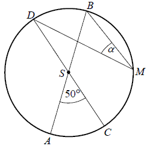

Matura 2013 maj
Wskaż rysunek, na którym zaznaczony jest zbiór wszystkich liczb rzeczywistych
spełniających nierówność \(|x + 4| \lt 5\) 
A
Liczby \(a\) i \(b\) są dodatnie oraz \(12\%\) liczby
\(a\) jest równe \(15\%\) liczby \(b\). Stąd wynika, że \(a\) jest równe
A.\( 103\% \) liczby\(b\)
B.\( 125\% \) liczby\(b\)
C.\( 150\% \) liczby\(b\)
D.\( 153\% \) liczby\(b\)
B
Liczba \(\log 100-\log_{2}8\) jest równa
A.\( -2 \)
B.\( -1 \)
C.\( 0 \)
D.\( 1 \)
B
Rozwiązaniem układu równań \(\begin{cases} 5x+3y=3\\ 8x-6y=48 \end{cases}
\) jest para liczb
A.\( x=-3 \) i \(y=4\)
B.\( x=-3 \) i \(y=6\)
C.\( x=3 \) i \(y=-4\)
D.\( x=9 \) i \(y=4\)
C
Punkt \(A=(0, 1)\) leży na wykresie funkcji liniowej \(f(x)=(m-2)x+m-3\). Stąd wynika, że
A.\( m=1 \)
B.\( m=2 \)
C.\( m=3 \)
D.\( m=4 \)
D
Wierzchołkiem paraboli o równaniu \(y=-3(x-2)^2+4\) jest
punkt o współrzędnych
A.\( (-2, -4) \)
B.\( (-2, 4) \)
C.\( (2, -4) \)
D.\( (2, 4) \)
D
Dla każdej liczby rzeczywistej \(x\), wyrażenie \(4x^2-12x+9\) jest równe
A.\( (4x+3)(x+3) \)
B.\( (2x-3)(2x+3) \)
C.\( (2x-3)(2x-3) \)
D.\( (x-3)(4x-3) \)
C
Prosta o równaniu \(y=\frac{2}{m}x+1\) jest prostopadła
do prostej o równaniu \(y=-\frac{3}{2}x-1\). Stąd wynika, że
A.\( m=-3 \)
B.\( m=\frac{2}{3} \)
C.\( m=\frac{3}{2} \)
D.\( m=3 \)
D
Na rysunku przedstawiony jest fragment wykresu pewnej funkcji liniowej \(y=ax+b\).  Jakie znaki mają współczynniki \(a\) i \(b\)?
Jakie znaki mają współczynniki \(a\) i \(b\)?
Jakie znaki mają współczynniki \(a\) i \(b\)? A.\(a\lt 0\) i \(b\lt 0\)
B.\(a\lt 0\) i \(b>0\)
C.\(a>0\) i \(b\lt 0\)
D.\(a>0\) i \(b>0\)
A
Najmniejszą liczbą całkowitą spełniającą nierówność \(\frac{x}{2}\le \frac{2x}{3}+\frac{1}{4}\) jest
A.\( -2 \)
B.\( -1 \)
C.\( 0 \)
D.\( 1 \)
B
Na rysunku 1 przedstawiony jest wykres funkcji \(y=f(x)\)
określonej dla \(x\in [-7, 4]\).  Rysunek 2 przedstawia wykres funkcji
Rysunek 2 przedstawia wykres funkcji
Rysunek 2 przedstawia wykres funkcji A.\( y=f(x+2) \)
B.\( y=f(x)-2 \)
C.\( y=f(x-2) \)
D.\( y=f(x)+2 \)
C
Ciąg \((27, 18, x+5)\) jest geometryczny. Wtedy
A.\( x=4 \)
B.\( x=5 \)
C.\( x=7 \)
D.\( x=9 \)
C
Ciąg \((a_n)\) określony dla \(n\ge 1\) jest arytmetyczny oraz \(a_3=10\) i \(a_4=14\). Pierwszy wyraz tego ciągu
jest równy
A.\( a_1=-2 \)
B.\( a_1=2 \)
C.\( a_1=6 \)
D.\( a_1=12 \)
B
Kąt \(\alpha \) jest ostry i \(\sin \alpha =\frac{\sqrt{3}}{2}\). Wartość wyrażenia
\(\cos^2\alpha -2\) jest równa
A.\( -\frac{7}{4} \)
B.\( -\frac{1}{4} \)
C.\( \frac{1}{2} \)
D.\( \frac{\sqrt{3}}{2} \)
A
Średnice \(AB\) i \(CD\) okręgu o środku \(S\) przecinają się pod kątem
\(50^\circ\) (tak jak na rysunku). 
Miara kąta \(\alpha \) jest równa
A.\( 25^\circ \)
B.\( 30^\circ \)
C.\( 40^\circ \)
D.\( 50^\circ \)
A
Liczba rzeczywistych rozwiązań równania \((x+1)(x+2)(x^2+3)=0\) jest równa
A.\( 0 \)
B.\( 1 \)
C.\( 2 \)
D.\( 4 \)
C
Punkty \(A=(-1, 2)\) i \(B=(5, -2)\) są dwoma sąsiednimi
wierzchołkami rombu \(ABCD\). Obwód tego rombu jest równy
A.\( \sqrt{13} \)
B.\( 13 \)
C.\( 676 \)
D.\( 8\sqrt{13} \)
D
Punkt \(S=(-4, 7)\) jest środkiem odcinka \(PQ\), gdzie
\(Q=(17, 12)\). Zatem punkt \(P\) ma współrzędne
A.\( P=(2, -25) \)
B.\( P=(38, 17) \)
C.\( P=(-25, 2) \)
D.\( P=(-12, 4) \)
C
Odległość między środkami okręgów o równaniach \((x+1)^2+(y-2)^2=9\) oraz \(x^2+y^2=10\) jest
równa
A.\( \sqrt{5} \)
B.\( \sqrt{10}-3 \)
C.\( 3 \)
D.\( 5 \)
A
Liczba wszystkich krawędzi graniastosłupa jest o \(10\) większa od liczby
wszystkich jego ścian bocznych. Stąd wynika, że podstawą tego graniastosłupa jest
A.czworokąt
B.pięciokąt
C.sześciokąt
D.dziesięciokąt
B
Pole powierzchni bocznej stożka o wysokości \(4\) i promieniu podstawy \(3\) jest
równe
A.\( 9\pi \)
B.\( 12\pi \)
C.\( 15\pi \)
D.\( 16\pi \)
C
Rzucamy dwa razy symetryczną sześcienną kostką do gry. Niech \(p\) oznacza
prawdopodobieństwo zdarzenia, że iloczyn liczb wyrzuconych oczek jest równy \(5\). Wtedy
A.\( p=\frac{1}{36} \)
B.\( p=\frac{1}{18} \)
C.\( p=\frac{1}{12} \)
D.\( p=\frac{1}{9} \)
B
Liczba \(\frac{\sqrt{50}-\sqrt{18}}{\sqrt{2}}\) jest równa
A.\( 2\sqrt{2} \)
B.\( 2 \)
C.\( 4 \)
D.\( \sqrt{10}-\sqrt{6} \)
B
Mediana uporządkowanego niemalejąco zestawu sześciu liczb: \(1,
2, 3, x, 5, 8\) jest równa \(4\). Wtedy
A.\( x=2 \)
B.\( x=3 \)
C.\( x=4 \)
D.\( x=5 \)
D
Objętość graniastosłupa prawidłowego trójkątnego o wysokości \(7\) jest równa
\(28\sqrt{3}\) . Długość krawędzi podstawy tego graniastosłupa jest równa
A.\( 2 \)
B.\( 4 \)
C.\( 8 \)
D.\( 16 \)
B
Rozwiąż równanie \(x^3+2x^2-8x-16=0\).
\(x=-2\) lub \(x=2\sqrt{2}\) lub \(x=-2\sqrt{2}\)
Kąt \(\alpha \) jest ostry i \(\sin \alpha =\frac{\sqrt{3}}{2}\). Oblicz wartość
wyrażenia \(\sin^2\alpha - 3\cos^2\alpha \).
\(0\)
Udowodnij, że dla dowolnych liczb rzeczywistych \(x, y, z\) takich, że \(x+y+z=0\), prawdziwa jest nierówność \(xy+yz+zx\le
0\).
Możesz skorzystać z tożsamości \((x+y+z)^2=x^2+y^2+z^2+2xy+2xz+2yz .\)
Możesz skorzystać z tożsamości \((x+y+z)^2=x^2+y^2+z^2+2xy+2xz+2yz .\)
Na rysunku przedstawiony jest wykres funkcji \(f(x)\) określonej dla \(x\in [-7,
8]\).  Odczytaj z wykresu i
zapisz:
Odczytaj z wykresu i
zapisz:
a) największą wartość funkcji \(f\),
b) zbiór rozwiązań nierówności \(f(x)\lt 0\).
Odczytaj z wykresu i
zapisz:a) największą wartość funkcji \(f\),
b) zbiór rozwiązań nierówności \(f(x)\lt 0\).
a) \(7\); b) \(x\in (-3;5)\)
Rozwiąż nierówność \(2x^2-7x+5 \ge 0\).
\(x\in (-\infty ;1\rangle \cup \langle 2{,}5; +\infty )\)
Wykaż, że liczba \(6^{100}-2 \cdot 6^{99}+10 \cdot
6^{98}\) jest podzielna przez \(17\).
Punkt \(S\) jest środkiem okręgu opisanego na trójkącie ostrokątnym \(ABC\). Kąt
\(ACS\) jest trzy razy większy od kąta \(BAS\), a kąt \(CBS\) jest dwa razy większy od kąta \(BAS\).
Oblicz kąty trójkąta \(ABC\). 
\(45^\circ , 60^\circ , 75^\circ \)
Pole podstawy ostrosłupa prawidłowego czworokątnego jest równe \(100\)
cm2, a jego pole powierzchni bocznej jest równe \(260\) cm2. Oblicz objętość
tego ostrosłupa.
\(V=400\)
Dwa miasta łączy linia kolejowa o długości \(336\) kilometrów. Pierwszy pociąg
przebył tę trasę w czasie o \(40\) minut krótszym niż drugi pociąg. Średnia prędkość pierwszego
pociągu na tej trasie była o \(9\) km/h większa od średniej prędkości drugiego pociągu. Oblicz
średnią prędkość każdego z tych pociągów na tej trasie.
\(v_1=72\) km/h, \(v_2=63\) km/h